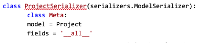
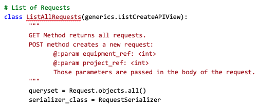
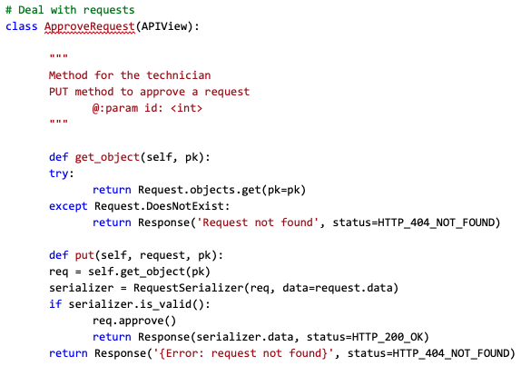

Like described early, to develop the API’s we used Django, more specifically Django Rest Framework (DRF). The main goal of the technician API is to provide stock management and system management. The API offers CRUD operations over equipment, projects and users. The API also offers the possibility for the technician to approve or deny requests made for an equipment and confirm the exits/entrances, automatically updating the stock in the database. To help with the querysets we used serializers. They allow complex data such as querysets and model instances to be converted to native Python data types that can then be easily rendered into JSON, XML or other content types. Serializers also provide deserialization, allowing parsed data to be converted back into complex types, after first validating the incoming data. class ProjectSerializer(serializers.ModelSerializer):  API calls were made with the help of Django Rest Framework, using generic views.One of the key benefits of class-based views is the way they allow you to compose bits of reusable behavior. REST framework takes advantage of this by providing a number of pre-built views that provide for commonly used patterns. The generic views provided by REST framework allow you to quickly build API views that map closely to your database models.  When we needed a more complex operation, like when the technician approves a request and the application has to update status of the equipment in the database, we used API Views from Django Rest Framework. Using the APIView class is pretty much the same as using a regular View class, as usual, the incoming request is dispatched to an appropriate handler method such as .get() or .post(). Additionally, a number of attributes may be set on the class that control various aspects of the API policy.  The complete code for the technician API can be consulted at technician_api/views.py For the complete API documentation, links to calls and models scheme, please refer to: Swagger or Redoc